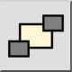

Esta es una traducción automática.
Barra de herramienta / icono:

Menú: Modificar > Orden > Enviar atrás
Acceso directo: M, B
Comandos: toback | mb
Cambia el orden en el que se muestran las entidades. Utilice esta herramienta para enviar entidades que ocultan otras entidades en segundo plano.